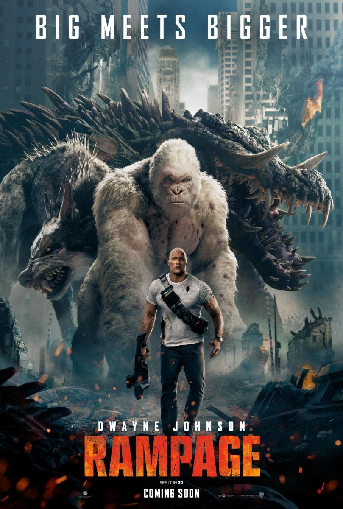

| |
|
|
 |
|---|
Ray Garrison, an elite soldier who was killed in battle, is brought back to life by an advanced technology that gives him the ability of super human strength and fast healing. With his new abilities, he goes after the man who killed his wife, or at least, who he believes killed his wife. He soon comes to learn that not everything he learns can be trusted. The true question is: Can he even trust himself?
Dominic and his crew thought they'd left the criminal mercenary life behind. They'd defeated international terrorist Owen Shaw and went their separate ways. But now, Shaw's brother, Deckard Shaw, is out killing the crew one by one for revenge. Worse, a Somalian terrorist called Jakarde and a shady government official called "Mr. Nobody" are both competing to steal a computer terrorism program called "God's Eye," that can turn any technological device into a weapon. Torretto must reconvene with his team to stop Shaw and retrieve the God's Eye program while caught in a power struggle between the terrorist and the United States government.
Bound by an inescapable blood debt to the Italian crime lord, Santino D'Antonio, and with his precious 1969 Mustang still stolen, John Wick--the taciturn and pitiless assassin who thirsts for seclusion--is forced to visit Italy to honour his promise. But, soon, the Bogeyman will find himself dragged into an impossible task in the heart of Rome's secret criminal society, as every killer in the business dreams of cornering the legendary Wick who now has an enormous price on his head. Drenched in blood and mercilessly hunted down, John Wick can surely forget a peaceful retirement as no one can make it out in one piece.
Athena-1, a space station owned by gene manipulation company Energyne, is destroyed after a laboratory rat mutates and wreaks havoc. Dr. Kerry Atkins, the lone surviving crew member, is ordered by CEO Claire Wyden to retrieve research canisters containing a pathogen. Atkins is able to flee in the escape pod when the station implodes, but due to damage from the rat it disintegrates upon re-entry, killing her. The falling pieces leave a trail of debris across the United States, including the Everglades in Florida, where a canister is consumed by an American crocodile, and a forest in Wyoming, where a gray wolf is exposed to the pathogen. Primatologist Davis Okoye, a former US Army Special Forces soldier and member of an anti-poaching unit, works at the San Diego Wildlife Sanctuary. He has befriended a rare albino western lowland gorilla named George, having saved him from poachers, and communicates with George using sign language and hand gestures.
Optimus Prime finds his dead home planet, Cybertron, in which he comes to find he was responsible for its destruction. He finds a way to bring Cybertron back to life, but in order to do so, Optimus needs to find an artifact that is on Earth.